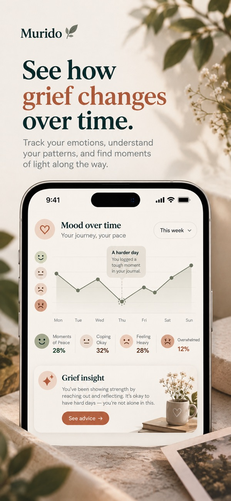

Get Murido
Start remembering today.
Murido: Grief & Memory is available for iPhone and iPad on the App Store.

Pricing
Murido is free to download. Murido Pro is required for personalized prompts, AI conversations, grief reflection sessions, letter writing, and memory features. It costs $59.99 per year, charged to your Apple Account, and renews automatically unless cancelled at least 24 hours before the period ends. Manage or cancel any time in your Apple Account settings.